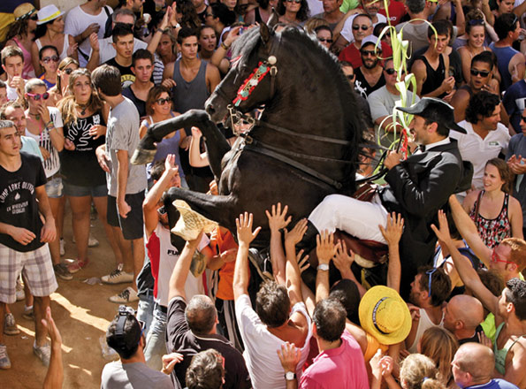
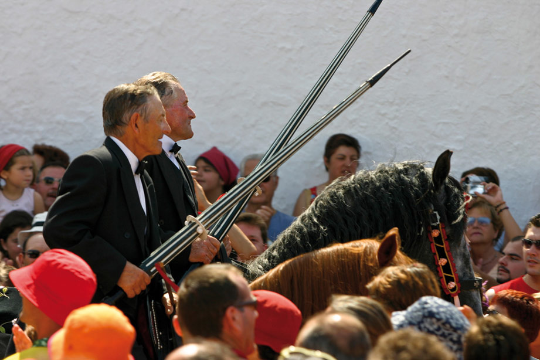
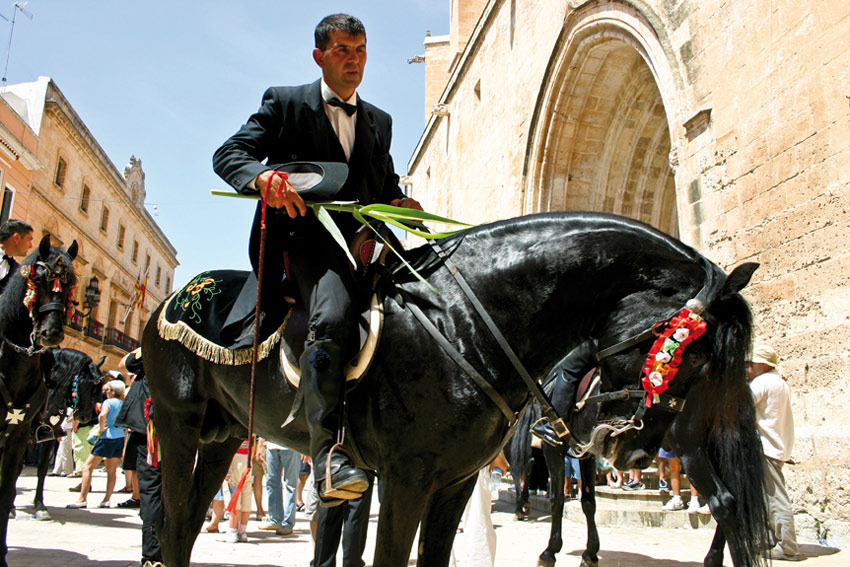

Les festes, la veneració del cavall
El cavall és un dels animals més nobles que es coneixen. Els menorquins ho saben bé, i porten molt de temps venerant-los, fins al punt de convertir-los en el centre de les seves festes patronals. A l'estiu, Menorca es desfà amb els cavalls i, amb la seva ajuda, celebra unes festes úniques, difícilment descriptibles.
L'origen d'aquestes celebracions es troba a Ciutadella. Al segle XIV es creà una obreria que s'encarregava de l'església rural de Sant Joan d'Artrutx, situada a uns cinc kilòmetres de la ciutat. Aquesta organització incloïa representants dels diferents estaments socials, els anomenats caixers, encarregats de desplaçar-se a cavall fins a l'església quan se celebrava un ofici religiós, sobretot en la vigília de Sant Joan. La tradició es mantingué amb els anys, i s'anaren afegint actes fins a esdevenir l'actual Sant Joan. Aquestes festes són, sens dubte, les més conegudes de Menorca. Cada any, durant els dies 23 i 24 de juny, Ciutadella es transforma; els seus carrers senyorials es vesteixen per acollir els cavalls i caixers, que reviuen una tradició centenària popularitzada fins al punt de convertir-se en un acte seguit per milers de visitants que arriben de fora de l'Illa per gaudir de l’increïble espectacle.
Tots els pobles de Menorca, incloent alguns nuclis turístics o residencials, tenen la seva festa patronal, i en tots ells els cavalls són els protagonistes. L'acte central és sempre el Jaleo, moment en què els caixers delecten la gent amb els bots dels seus cavalls al ritme d'una música que, tot i no ser originària de l'Illa, s'ha convertit en una senya d'identitat inequívoca de l'essència menorquina. Totes les celebracions atrauen una gran quantitat de gent que té ganes de gaudir amb els cavalls i caixers, guiats sempre pel so del fabioler, la figura que obre la comitiva de cavalls amb el peculiar so del fabiol.
Si té l'oportunitat d'assistir a alguna d'aquestes festes patronals, no la deixi passar. Gaudeixi, submergeixi's amb precaució dins de la festa i senti's com un menorquí més.